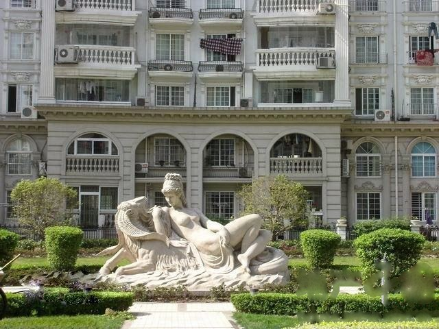

春天来了，阳光洒满了屋子。
推窗望去，小区里，草坪开始返青，一些不知名的小花冒了出来。特别是周边那一棵棵小树，原来它们是那么的不起眼、纤纤弱弱的，不知不觉居然出落得这般挺拔、硕壮。对，这就叫“十年树木”啊，不经意间，我们搬进这个小区已经整整十年了！
这让我想起了前后四次搬家的经历，想起了我家住房的变迁。
我和妻子的婚房，是峨嵋路上的一个“亭子间”。这还是当时房管所特地为照顾大龄青年结婚分配的，这在70年代末已属非常不易。
“寒窑虽破能抵风雨”，这个十平方的低矮的亭子间不但帮助我们抵御风雨，还承担了卧室、客厅、餐厅、书房、甚至卫浴、厨房的功能，这在今天，是难以想象的。
不久，女儿在冬天出生，亟需阳光。但是，在朝向西北的亭子间里，这成了一种奢望。我记得很清楚，盼到了晴天，室外阳光普照，可是室内还是一片阴冷。等到正午12点，我捧着襁褓中的女儿，走到窗前，期盼阳光能在女儿身上多停留一会儿，可是，那时的太阳是那样的吝啬，它稍纵即逝，一秒钟也不愿意多停留 ……
夏天来了，亭子间转眼变成了一个“蒸笼”，火辣辣的太阳不请自来，一直要晒到下午五、六点。眼睁睁地看着女儿身上的痱子一批刚刚褪下，一批又冒了出来，我们心疼不已。只能土法降温：用饱蘸清水的抹布使劲地抹擦地板，但随着蒸气腾起、水分挥发、室内依然炎热如故……
对于大人们来说，夏天最难解决的问题，莫过于冲凉洗澡了。男士们还好办些，穿个裤叉，拎上满满一铅桶水，站在后门口，边冲边洗。这或许成了70年代上海老弄堂里的一道难得的风景。女士们便艰难得多，百般无奈之下，她们选中了一块“宝地”权当浴室，就是从后门通向楼上的一段过道。因为这里既有水源，又有下水道（各家的自来水龙头都装于此）。只是在她们洗澡时，就必须 “交通管制”，门外的人进不来，楼上的人也不许下来。这样，先把后门锁上，还每每请来张家阿婆、李家奶奶帮忙，守在楼梯口，做纠察、当“协管”。这样的日子，一熬就是七、八年。
终于迎来了改革开放，我国经济开始腾飞，大批新公房拔地而起。
一次，我去安图中学参加教研活动，走在靖宇路上。看见一排排崭新的公房刚刚落成。我几次停下脚步、细细的端详，看着那诱人的绿窗粉墙，心中好生羡慕。
没想到，居然梦想成真。
不久后一天，妻子回家喜气洋洋地告诉我，她们学校给她分配住房了！房子恰好就是靖宇路上的延吉新村。我们兴高采烈地领了钥匙、办了手续。新房有一室半，朝南钢窗阳台、南北通透，特别是有了独立的卫生间和厨房，居住条件大幅改善，一家三口都喜出望外。
此时，女儿正上小学。在一次朗诵比赛中，她朗诵了一篇散文，赞美了小区的环境，下面是其中的几句：
我喜欢倚着窗口，向外眺望。沿街清秀挺拔的梧桐整齐地挺立着，好像庄严的战士守卫着新村；小草从地底下伸出头来，染绿了新村房前宅后的一块块草坪。朝街心花园的方向望去，一片片，一簇簇各种颜色的小花，轻盈、娇艳地散落在草丛里，像眼睛、像星星。在拥挤的城市里，能有这么大的绿化面积，那真是难能可贵啊！
我爱新村沁人心脾的空气、我爱绿色的优美新村！
她的朗诵，由于感情真挚、发自内心，得到了老师的赞赏、学校的嘉奖。
又过了几年，随着工作的调动，运气不错的妻子挤上了“福利分房”的末班车。这次是在内江新村，增配一套住房，两室户。算一算，哟，人均建筑面积已经接近了30平米！我们真是切切实实地享受到了改革开放带来的红利！
随着房改的大幕徐徐拉开，中国渐渐地进入了商品房时代。
“弄潮儿向涛头立”，我们学院教研室的绝大多数同事都购买了商品房。在改革大潮的推动下，我家也购买了一套商品房。
开发商给小区取了个夸张的名字叫“欧洲豪庭”，建筑仿照欧式、房屋配上了金顶，小区内有翠绿的草坪、五彩的花坛、大小艺术雕塑、鹅卵石铺就的林荫小道……
我们住进了三室两厅：冬天太阳暖暖，夏天凉风习习，与亭子间相比真是有天壤之别。
女儿也有了自己的房间。记得搬进“豪庭”的第一天，女儿在房里、厅里、厨房里，跳进、跳出、唱着、笑着，兴奋之情溢于言表。
现在，清晨，我们常常是在各种清脆、悦耳的鸟叫声的伴随中慢慢醒来。有一次，我还惊奇地发现：浴室的通风口里，居然有一种陌生的鸟儿筑起了巢；傍晚，我们常常漫步在林荫小道上，尽情地呼吸着花儿的清香、聆听着此起彼伏的昆虫的鸣叫……
从亭子间到“欧洲豪庭”，四次搬家，体现了我家生活环境和住房条件的巨大的变化。
从我的小家的变迁，折射出祖国改革开放带来翻天覆地的变化。
我国百姓经历了从“居者忧其屋”到“居者有其屋”,正朝向“居者优其屋”的深刻变化，这充分体现了时代的进步、我们祖国这个大家庭正越来越繁荣、富强！
“安得广厦千万间，大庇天下寒士俱欢颜！”
一千多年前，诗圣杜甫心中的美好理想，在改革开放的今天，正在成为美好的现实。
（本文在“杨浦区教育系统欢庆建国65周年 上海解放65周年征文”活动中获得二等奖，刊登在2014.11.29《杨浦时报》上）

欧洲豪庭中心花园的雕塑